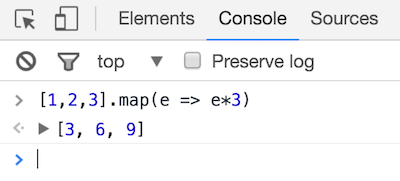
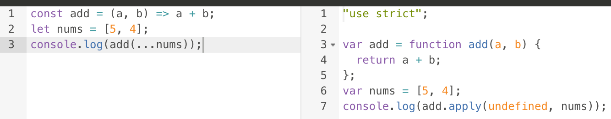

Appendix: ES2015
The new shiniesIn this appendix chapter we will more fully explore the new features in ES2015!
Versatile object definitions
defining objects like a boss
In ES2015 we got five small but nice features for defining objects in a smoother way:
- adynamic keys
- bautomatic same-key-value
- cmethod shorthand
- dgetters
- esetters
If we wanted to create an object with a dynamic key we had to go about it in a roundabout way before:
var obj = {};
var obj[dynamicKey] = someValue;
Now, instead, we can use the dynamic key syntax by wrapping it in brackets:
var obj = {[dynamicKey]: someValue};
Also, if our value is in a variable with the same name as the intended key, like here:
var person = {
name: name,
age: age
};
...ES2015 introduces a shorthand syntax:
var person = {name, age};
And if we define an object with a method:
var obj = {
method: function(arg1,arg2){
// do advanced stuff
}
};
...ES2015 lets us be less verbose by using the method shorthand syntax:
var obj = {
method(arg1,arg2){
// do advanced stuff
}
};
This can also be combined with the dynamic key syntax:
var obj = {
[methodName](arg1,arg2){
// do advanced stuff
}
};
Finally, ES2015 also introduced getters and setters.
Let's look at getters first. They are very useful for dealing with computed properties.
Say we're working with user objects like this:
var user = {
firstName: "John",
lastName: "Doe"
};
Now we want to implement a computed property fullName.
Here's an ES3 solution doing it as a method:
var user = {
firstName: "John",
lastName: "Doe",
fullName: function(){
return this.firstName + ' ' + this.lastName;
}
}
user.fullName(); // John Doe
By using an ES2015 getter we can access the computed property normally instead:
var user = {
firstName: "John",
lastName: "Doe",
get fullName() {
return this.firstName + ' ' + this.lastName;
}
}
user.fullName; // John Doe, without invocation!
You can see all three syntaxes in an Angular context in the Getter demo!
A setter let's you act upon prop mutation, for example logging...
var user = {
set userName(str) {
log(this._userName + " changed name to " + str);
this._userName = str;
}
}
user.userName = "Steve"; // Bob changed name to Steve
...or validation:
var user = {
set userName(str) {
if (str.match(/[^a-z]/)){
throw "Name can only contain lowercase letters!";
}
this._userName = str;
}
}
user.userName = "Bob the 1 and only"; // Name can only contain..
Did you note that we used a different property name inside the setter? The setter was for userName, but inside it we instead set _userName.
Why do you think that is?
If we mutated the same property inside the setter then that would trigger the setter to be called, which would mutate the property, which would trigger the setter, etc. We would end up in an infinite loop.
Destructuring and rest
cherry-picking the raisins from the cookie
Destructuring is a way to pick values from nested structures without having to do the manual digging.
Let's say we have an array of contenders, each represented by an object.
let contenders = [
{name: "David", age: 37},
{name: "Carl", age: 38}
/* and a few others */
];
They are sorted by position so the first contender won, etc.
If we wanted the name of the winner we would do something like this in ES5:
let winnersName = contenders[0].name;
With destructuring, we can instead do this:
let [{name: winnersName}] = contenders;
Or, combined with the same-key-value shorthand:
let [{name}] = contenders;
Destructuring also allows us to use the powerful rest element which can lump up many array elements into one, making for some very succinct code:
let [winner, ...losers] = contenders;
Note that the rest element has to be the last one in the array, so this wouldn't work:
let [...others, superloser] = contenders; // syntax error
Wait.. Theoretically, the rest could be placed anywhere, as long as there's just one. The parser should still be able to figure out what's what!
Right?
True. But that would require lookahead, which is complex and more taxing. And so the choice was made to only allow the rest element in the last position.
Versatile function definitions
defining function like a boss
ES2015 provides several neat features for defining functions:
- adefault parameter values
- brest parameters
- cdestructuring parameters
- darrow functions
Default parameter values exist in many languages, and was popularised in JS through CoffeeScript.
The idea is to handle optional parameters in a smoother way.
Creating a function with an optional parameter in ES3 meant we had to do a sometimes tedious dance of initialization:
function makePerson(name, age) {
var age = age || 'unknown';
// do complex stuff
}
This may or may not do what you want. (Hint: is 0 a reasonable value for age?)
With default parameter values we can instead do this:
function makePerson(name, age = 'unknown') {
// do complex stuff
}
The second new feature, rest parameters, is a way of capturing multiple arguments into a single variable like a rest element in a destructuring.
This can often save us from having to do awkward stuff with the not-quite-an-array arguments object.
Imagine a competition function that is called with all contenders one by one:
function competition() {
var contenders = Array.prototype.slice.call(arguments);
var winner = contenders[0];
var losers = contenders.slice(1);
// do something with winner and losers
}
Using rest parameters, this function simply becomes:
function competition(winner, ...losers) {
// do something with winner and losers
}
Note that the rest parameter has to be the last parameter, just like the rest element, and for the same reason.
Remember destructuring? We can use that in signatures:
function introduce({name, age}) {
console.log(name,"is",age,"years old");
}
var me = {name: "David", age: 37};
introduce(me); // David is 37 years old
Finally - know how defining anonymous functions in JS is rather verbose?
var mcboatify = function(arg) {
return "Boaty Mc"+arg+"Face";
};
With arrow functions things feel less heavy:
var mcboatify = (arg) => {
return "Boaty Mc" + arg + "Face";
};
They can become smaller still - if we have exactly one parameter, we can omit the parenthesis in the signature:
var mcboatify = arg => {
return "Boaty Mc" + arg + "Face";
};
Finally, if you just want to return an expression, we can skip brackets and the return keyword:
var mcboatify = arg => "Boaty Mc" + arg + "Face";
Now the function body consists of a single expression, which will be implicitly returned.
Note however that if you want to use the single expression form with an object literal, we have to wrap it in parenthesis to distinguish it from a regular function block:
var createUser = (name,age)=> ({name,age})
Arrow functions are not only less heavy to write, they are also lighter for the interpreter since they don't get an implicit context parameter.
Which means that if you refer to this inside an arrow function, it is the same this as on the outside.
var me = this;
setTimeout(() => {
console.log(this === me); // true
}, 10)
setTimeout(function(){
console.log(this === me); // false
}, 10)
As a final note; arrow functions can beautifully describe the flow for nested higher order callbacks. Remember the multiplier example from the functional programming section?
function multiplier(func,times){
return function(){
for(var i = 0; i < times; i = i + 1){
func();
}
};
}
With arrow functions, that becomes:
var multiplier = (func,times)=> ()=> {
for(var i = 0; i < times; i = i + 1){
func();
}
}
Spreads
the dark side of rests
You have already seen how we use rest element/parameter to capture several array elements into a single variable:
var [winner, ...losers] = competitors;
Now imagine the opposite scenario - we have the winner and losers variables, and want to define competitors. In ES3 this is done like this:
var competitors = [winner].concat(losers);
ES2015 gives us a new options - spreads! It looks exactly like rest, but we use it on the right side instead (or when we call a function as opposed to when we define it):
var competitors = [winner, ...losers];
We say that we spread the contents of the expression into the outer array.
Spreads gives us a less verbose way to copy an object and add properties to it, which is otherwise done like this:
var augmentedObj = Object.assign({}, oldObj, newProps);
With spreads we can instead do this:
var augmentedObj = {...oldObj, ...newProps};
Note that while spreads and rests with arrays are in the spec for ES2015, object spread is still a Stage 3 proposal (November 2017).
It is expected to be accepted into an upcoming release of the language, and is already supported by Babel and the like.
Modules
getting into the import/export business
As we saw earlier, Node gave us modules through the require and module.exports globals it provides.
But with ES2015, we got native modules for the very first time!
While Node modules followed the CommonJS module standard, what was implemented in the language follows another syntax, named ES modules.
But the concepts are the same. While you would do this in CommonJS...
// file1.js
module.exports = {..};
//file2.js
var lib = require("./file1.js");
...you would do this with ES modules:
// file1.js
export const lib = {..};
//file2.js
import lib from './file1.js'
We have to name our exports here, otherwise things are pretty similar.
Note that even though this is now part of the language, there are no browsers that implement the functionality yet.
This is mainly because it wouldn't be practical - we'd get a gazillion http requests for small files.
And since we likely have a build step anyway to do minification and transpiling and similar, you can easily bundle your code into a single file, too.
But, with the advent of HTTP2, who knows what the future will hold!
Classes
Waiter, there are classes in my JS!
Before ES2015, JavaScript used to famously lack classes.
This was not an oversight. Consider what classes are normally used for:
- resusing functionality and
- setting up hierarchies
In JavaScript this is addressed by
- simply grabbing methods and/or mixing objects
- prototypal "inheritance", which should really be called delegation
This means that classes didn't really serve a purpose. Yet they were still frequently used, through the weird, bolted-on new syntax which makes functions behave like constructors:
var user = new User("David", 1979);
But to really make this behave like normal classes...
var lucas = new Dog("Lucas");
lucas instanceOf Dog; // true
lucas instanceOf Animal; // true
lucas.bark(); // Lucas goes woof!
...then lots of jumping through hoops had to be done:
Dog.prototype = new Animal();
Dog.prototype.constructor = Animal;
Dog.prototype.bark = function() {
console.log(this.name, "goes woof!");
}
To facilitate "class" use in JavaScript, ES2015 introduced the class syntax:
class Dog extends Animal {
bark() {
console.log(this.name, "goes woof!");
}
}
Note how method shorthands are available in class declarations too!
But it is important to note that this does not mean that JavaScript has actual classes.
Under the hood the same weird prototype and constructor dance happens.
Still, since the syntax hides the mismatch, it can be a convenient way to package functionality. And Angular makes heavy use of this construct, so let's check out some details! Specifically:
- aconstructor
- bmethods
- cproperties
First off, what used to go in the fake constructor...
function Animal(name) {
this.name = name;
}
...is now placed in a literal constructor method in the class declaration:
class Animal {
constructor(name) {
this.name = name;
}
}
If you want the inherited constructor to be invoked too, you must do so yourself with the new super keyword:
class Dog extends Animal {
constructor(name) {
super(name);
this.nickname = name + 'y boy';
}
}
And you've already seen methods:
class Dog extends Animal {
constructor() { ... }
bark() {
console.log(this.name,"goes woof!");
}
}
Similar to object methods, this (normally) points to the instance.
Finally, as you saw, properties are normally initialised in the constructor:
class Animal {
constructor(name) {
this.name = name;
}
}
...but when we use TypeScript we can also initialise properties directly on the class declaration:
class Dog {
numberOfLegs = 4;
}
This is likely to become a part of JavaScript syntax too.
So, to recap:
- classes are just a light syntactic sugar introduced in ES2015
- we normally don't need them in JavaScript
- but they are a convenient way to bundle related functionality
- which Angular makes heavy use of!
Decorators
dewhatnow?
The situation around decorators is rather confusing;
- There is a proposal to add it as a language feature
- There is a slightly different implementation in TypeScript
- There is the parallel idea in
Reflect - There is disagreement on whether decorators are a good idea at all
- There is (was?) something called annotations that is sort of the same... yet not
Focusing on the TypeScript implementation, decorators are a way of decorating a class...
- declaration
- property
- getter or setter
- method
- method parameter
As a simple example, imagine that we have a debounce function that throttles other functions:
function debounce(fn) {
// ... create a throttled version of `fn`...
return throttledFn;
}
And then we have a class with a method that is very expensive to call:
class myClass {
myExpensiveMethod: function() {
// lots of heavy lifting here
}
}
Without decorators we would do this:
class myClass {
myExpensiveMethod: debounce(function() {
// lots of heavy lifting here
})
}
With decorators, instead, we use the @ syntax:
class myClass {
@debounce
myExpensiveMethod: function() {
// lots of heavy lifting here
}
}
The end result is the same thing.
We can also have decorators that take additional arguments. For instance debounce could accept a minimum number of milliseconds:
class myClass {
@debounce(300)
myExpensiveMethod: function() {
// lots of heavy lifting here
}
}
In other words, decorators are just a light syntax sugar.
But since an Angular app consists mainly of classes with core functionality sprinkled in, then decorators make a lot of sense.
This is what a Hello-World component looks like without them:
AppComponent = Component({
selector: 'my-app',
template: '<h1>My First Angular App</h1>'
}).Class({
constructor: function() {},
// other model-specific stuff
});
And here it is in using decorators (through TypeScript):
@Component({
selector: 'my-app',
template: '<h1>My First Angular App</h1>'
})
class AppComponent {
// other model-specific stuff
}
If you want to dig deeper into decorators, check out...
- The decorator section of the TypeScript handbook
- This concice and clear explanation with examples and interactive links
Miscellaneous
odds and ends
There's three more things worth mentioning:
- adeclaring variables with
let - bdeclaring variables with
const - ctemplate strings
Variables in JavaScript have functional scope.
Even if you declare them inside an if-block in the middle of a function, the variable is still visible throughout the entire function.
So when you write this...
function myFunc(arg,lib){
if (arg === 42){
var ret = lib.method() + 7;
return ret;
}
// do sth else
}
...this is what (conceptually) happens:
function myFunc(arg,lib){
var ret;
if (arg === 42){
ret = lib.method() + 7;
return ret;
}
// do sth else
}
In other words, the declaration is hoisted to the top.
This is generally considered a design mistake, and can give rise to weird bugs.
ES6 therefore introduces let as an alternative to var for declaring variables, and the only difference is that let has block scope.
In most languages there's a way to define constants, meaning a variable that cannot change.
This is missing from JavaScript.
A common "hack" is to name constants in all capitals:
var SOME_CONST = 42;
But this has no technical significance, it is just a hint.
ES6 therefore introduces const as another alternative to var, and the only difference is that you cannot reassign the value.
const answer = 42;
answer = 43; // throws an error
Finally, template strings!
let userTempl = `
First name: ${user.fname}
Last name: ${user.lname}
`;
As you saw, template strings...
- are defined inside two backticks
- can contain linebreaks
- allow interpolation inside ${}
There's also a semi-secret way to invoke functions with templates. Here's an example from Choo:
html`
<main class="app">
Count: ${state.counter.count}
<button onclick=${(e) => send('counter:increment')}>+</button>
</main>`
The html function is invoked with the templates and interpolated values.
Trying it out
Toe into the water
As a light-weight exercise during the upcoming break, let's try some of the ES6 stuff out!
We'll do this in two different parts:
- awriting and running ES6 code
- bchecking how it translates to ES5
An easy way to run ES6 code is by using es6fiddle.net. Write ES6 code in the left column, and see the output to the right.

Through a dropdown you can access a number of ready-made examples which are a good starting point for experimenting.
If you have a modern version of Chrome you can also run ES2015 code in the console!

To see the ES5 equivalent, we'll use babeljs.io/repl. The right column here shows ES5 translation instead of output.

A good way to get started is to copy the ES6fiddle examples and see what they translate to!